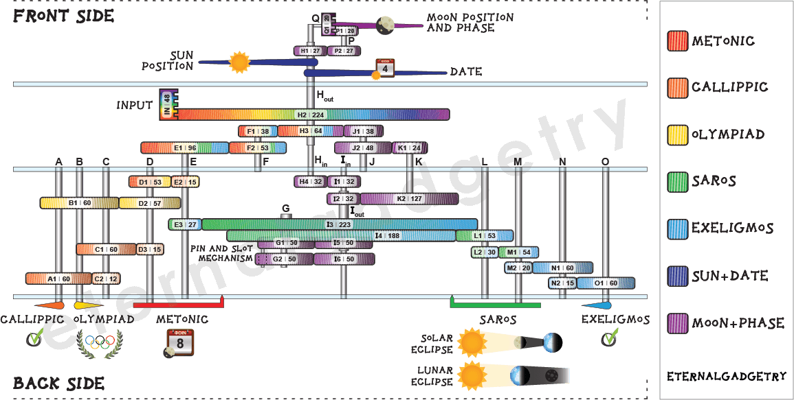
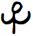
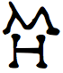
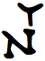

Working Principles
All you need to know about the functions of the Antikythera Mechanism
1.1 Gears and how they can make calculations
The Antikythera Mechanism, as we know it today, consists of approximately 40 cooperating gears. Each pair of gears makes a division according to the number of teeth of the meshing gears. This calculation is then fed to the next set until it reaches the final axis, and hence pointer, indicating an event which is read off a dial. Hence, it is a modular calculator with its complexity increasing with the number of gears. As an example, the division 40/60 can be done with a set of gears with 40 and 60 teeth, or more simply with 20 and 30 teeth instead. For calculations involving prime numbers, however, one cannot simplify further and reduce the number of teeth. This is the reason why one finds gears with 53, 127 or 223 teeth etc. on the original mechanism. Recent scientific findings give the following overall schematic diagram [1-2]. By placing your mouse over the legend to the right, you get highlighted gear-flows for each of the 7 cases:
 Fig. 1: Antikythera Mechanism schematic diagram. Gear-flows are highlighted by placing your mouse over the legend to the right (you may have to refresh the page if your connection is slow). One can make his own reflections about the complexity of this device which was imagined and created more than two millennia back in time.1.2 A 2100 year-old computer with modern philosophy, packed with a user manual too
As we just saw, the Antikythera Mechanism is a mechanical, or analogue computer programmed to perform predefined calculations and has two displays, at the front and back sides, much like we can have nowadays a computer connected to two screens. Very briefly, it depicts and predicts the natural motion of objects in the sky, such as the sun, the moon (including its phase) and most probably the 5 visible planets which have not survived but can be inferred. Furthermore, it gives predictions for possible solar and lunar eclipses as well as informs about astronomical events that were important either for agricultural or religious purposes. Finally, the Olympics and other panhellenic games were predicted, bringing a social character to the instrument. All those functions were explained by tiny inscriptions engraved on various parts of the device, similarly to how one nowadays gets a user manual with the purchase of a gadget.
1.3 Lunar and solar calendars
The Antikythera Mechanism makes extensive use of solar and lunar calendars in order to display its predictions. These two separate calendars differ in their philosophy. For instance, lunar months shift with respect to seasons throughout years, unlike "months" in our solar calendar. The unequal durations between these and various other types of "months" bring further complications. The Antikythera Mechanism constructor had to deal with, and find solutions to all these problems.
Let us now look into detail at the particular functions, dividing the discussion in the front and back displays in turn.
{kind=link}
2.1 Dials
In the front display one can see two large concentric dials. The external shows the months of the Egyptian calendar written in Greek, divided in 365 days. This is a solar calendar, much like our January, February etc. In the Egyptian calendar, each of the 12 months has 30 days, with 5 extra days completing the year. This dial can be rotated by 1 division (= 1 day) every 4 years, to account for leap years as was known and done in ancient times. A single pointer on this dial shows the date. The large internal circular dial is the zodiac. The positions of the moon and sun are shown by two extra pointers in this celestial coordinate system of 360°, with twelve 30° divisions. The moon has a clever gear sub-system so it can also rotate around its axis. As a result, the phase of the moon is also predicted and displayed at any given time. Hypothetically, this internal dial is where the planets could have been depicted as well. The age on the moon in days (or day of the month according to a lunar calendar) is shown in a smaller dial closer to the center of the front display [3].
2.2 How was the elliptical moon orbit approximated in a truly ingenious construction
The orbit of the Moon is distinctly elliptical, with a very small average eccentricity of 0.0549. The constructor(s) of the mechanism considered it essential to approximate and depict this true motion of the moon through the sky, despite a much simpler circular orbit would still capture most of the truth. But how does the mechanism manage this, given that all gears are truly circular? The answer to this is in any case not at all straightforward, and the particular way that this is implemented in the instrument is ingenious. Two gears of similar size are placed on top of each other, and held by the same axis. They are however off-centered by just over a millimeter thanks to the particular design of their axis. One gear has a pin close to its edge, which fits in a rectangular slot (of just over two millimeters) of the other gear. As the gear with the pin rotates, it drives the slotted gear, but with slightly unequal velocity. This produces an effective phase-shift between them known as the variable moon motion. It closely approximates an elliptical motion, or Kepler's second law of planetary motion. There are two more gears involved in this, with all four gears having 50 teeth. Naively, the calculation these make is 50/50*50/50 = 1. So in this case it is not about doing some number manipulation but rather produce a sine-wave or variable motion. To make it even more complex, the “pin-and-slot” gears are fixed within a larger gear, so they rotate within the rotation of another gear (epicyclic gears). This large gear rotates at the speed necessary to model the Apsidal precession of the moon (8.85 years)! This whole concept is truly the highlight of the Antikythera Mechanism.
{kind=link}
2.3 Parapegma
Situated to the top and bottom of the circular dials are inscriptions describing characteristic astronomical events, known as the Parapegma. These events relate to the rising and setting of stars/constellations around the sunrise or sunset. The appearance of such events uniquely and constantly within a year made them important in everyday practicalities such as agriculture, religion, navigation. They are divided in four quadrants, two at the top and two at the bottom, left and right in each case. Each quadrant of the parapegma corresponds to a season of the year, and describes important events taking place within 90° of the zodiac cycle. The individual events are numbered by A, B etc engraved to the left (Greeks used the alphabet also as numbers). A smaller number to the right of each parapegma event, indicates the day of the month when the event will take place. This is also matched by the same number inside the zodiac.
The back display is fully covered by two spirals, the upper Meton dial and the lower Saros one. Within them, they contain further smaller circular dials with more details.
{kind=link}
3.1 Metonic, Callippic and Olympiad Dials
A lunar (or synodic) month corresponds to 29.53059 days, which is the duration it takes for the moon to reach the same phase again (for example full moon to full moon). A year consists of 365.242199 days, taking into account the leap-year day. Clearly, the lunar and solar calendars are not straightforwardly related, since 365.242199/ 29.53059=12.36827 doesn't give an integer number. The solution to this was given by Meton in 432 BC, much before the construction of the Antikythera Mechanism. He simply took 19 years = 6939.60 days which correspond extremely close to 235 lunar months (29.53059*235=6939.69 days). After a full Metonic cycle, the sun, moon and earth are back in nearly the same relative orientations. The Metonic calendar was used in the Antikythera Mechanism, and constructed by placing 235 divisions around a five-turn spiral. Each division corresponds to a lunar month and is marked by its corresponding name. In this Greek lunar calendar, 12 years have 12 months while the rest 7 years have 13 lunar months. The years with the extra 13th month are distributed such that the lunar months remain roughly constant with respect to seasons. Another point is the fact that the months were regulated to have 29 or 30 days, in order to give an average of 29.53059 days (proper lunar month duration). The numbers A, E etc. around the inside of the Metonic dial specify the days which should be skipped in each of the 29-day months across the same radial line.
The Callippic dial can be seen to the inside left part of the Meton spiral, following a 76-year cycle in an attempt to provide an additional correction to the Metonic dial. According to the Callippic cycle, one day has to be removed every 4 Metonic cycles. This was thought to improve the accuracy between the relation of solar years and whole numbers of lunar months. It is clear that the people who devised this instrument didn't cut any corners, but were determined to construct it extremely accurate.
The Olympiad subsidiary dial to the right has a four-year cycle and predicts various panhellenic games, including the well-known Olympics [2]. The panhellenic games were typically repeating every 4 or 2 years, depending on their type. The social part of life was not underestimated but wisely embedded in the mechanism's gear-work on equal terms with the astronomical events. This is the only pointer in the whole of the Mechanism that rotates in an opposite sense to the rest.
3.2 Saros and Exeligmos Dials
The Saros dial predicts possible solar and lunar eclipses. If an eclipse occurs at a given time, a very similar one will occur 223 lunar months later. This cycle arises from the coincidence of three orbital periods of the moon: (i) same phase, (ii) same lunar crossing of the earth-sun orbital plane and (iii) similar earth-moon distances. In other words, after 223 lunar months, the three celestial bodies sun, moon and earth are back to very similar positions in the sky. The 223 divisions of the Saros cycle are distributed around a four-turn spiral in the lower back part of the mechanism. Engraved symbols can be seen only for those months with possible eclipses. The eclipse type is given by Η for solar and Σ for lunar after the Greek words ΗΛΙΟΣ and ΣΕΛΗΝΗ for sun and moon respectively. The special glyph , after the two first letters of the word ώρα (hour), signifies the hour of the eclipse.  and  stand for day and night (ΗΜΕΡΑ and ΝΥΞ respectively). The sequence number of each eclipse is given at the bottom part of the corresponding division.
Since 29.53059*223=6585 1/3 is not an integer, eclipses will be shifted by 1/3 of a day (8 hours) between successive Saros cycles. Only every 3 Saros cycles = 54 years we get true eclipse repeat conditions. This is the so-called Exeligmos cycle, incorporated to the inside of the Saros dial of the Antikythera Mechanism. It tells us how many hours to add to the eclipse time in order to get its correct time. The dial is divided in three angular parts of 120° each, with the first one being blank and the other two reading 8 and 16, the hours to be added (H and IC in ancient Greek).
[1] T. Freeth, Y. Bitsakis, X. Moussas, J. H. Seiradakis, A. Tselikas, H. Mangou, M. Zafeiropoulou, R. Hadland, D. Bate, A. Ramsey, M. Allen, A. Crawley, P. Hockley, T. Malzbender, D. Gelb, W. Ambrisco, M. G. Edmunds, Nature 444, 587 (2006).
[2] T. Freeth, A. Jones, J. M. Steele, Y. Bitsakis, Nature 454, 614 (2008).
[3] M. T. Wright, Antiquarian Horology 29(3), 319 (2006).